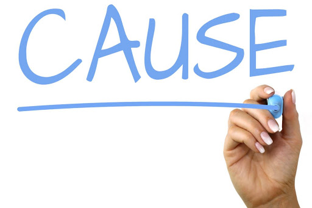

AMRITA HEALTH

|
What is Viral Fever? |
|---|---|
|
Most people have a body temperature of about 98.6°F (37°C). Anything a degree above this is considered a fever. Fevers are often a sign that your body is fighting off some type of bacterial or viral infection. A viral fever is any fever that’s caused by an underlying viral illness. |
|  |
A viral fever is caused by infection with a virus. Viruses are very small infectious agents. They infect and multiply within the cells of your body. There are many ways that you can become infected with a virus, including: |
|
|
|---|
|
|
|
Take ample rest which will help the medicines to work and get back your immunity. Complete the course of medication to cure the infection of the root. Increase fluid intake to avoid dehydration in the body. Take lighter meals which can be easily digested.
Self-medication should be strictly avoided. Taking medicines without proper knowledge and diagnosis worsens the existing condition. Do not share personal belongings like handkerchief and food with anyone else to reduce the chances of spread. Don’t take antibiotics unless prescribed by a doctor. The environment and temperature around the patient should remain normal. Patients shouldn’t bind up with heavy clothes or blankets even if they get chills. |

DENGUE: |
MALARIA: |
|
TYPHOID: |
Types & Symptoms |
YELLOW FEVER: |
|
CHICKEN GUNYA: |
SCRUB TYPHUS: |
Prevention
We have been always said that “Prevention is better than cure”. So, here are some preventive measures that can keep the viral fever away. The main cause of viral fever is a viral infection. So it is important to maintain personal hygiene to avoid infections. Get annual vaccination against flu which helps immunity to fight against the viral infections. Wash hands frequently to stay protected from viruses. Viral growth is less in higher temperatures when compared to normal and moderate temperatures. So, try to consume food when it is warm. Sharing personal utilities can increase the chances of infection. So, avoid sharing your belongings with others. After a visit to the hospital, whether for a checkup or to meet a patient, change your clothes immediately and leave them to wash to avoid the chances of infections.